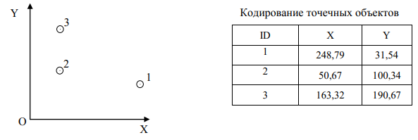
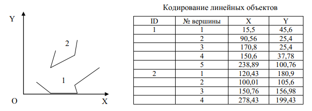
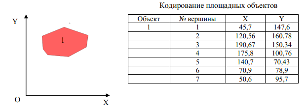

РАЗДЕЛ 3. ВЕКТОРНАЯ МОДЕЛЬ ДАННЫХ
3.1. Векторная модель данных
Векторные модели исторически связаны с устройствами цифрования карт – цифрователями (дигитайзерами) с ручным обводом объектов. При этом генерируется поток пар плановых координат при движении курсора по планшету.
Векторное представление или векторная модель данных – это цифровое представление точечных, линейных и полигональных объектов в виде набора координатных пар. В основном используются двухмерные модели (2D), хотя для отдельных задач применяются трехмерные ГИС (в данном разделе не рассматриваются).
Векторные модели позволяют представлять точечные объекты с помощью пары координат (X и Y) координатного пространства, линии – определенной последовательностью пар координат их вершин, области – замкнутой последовательностью соединенных линий, начальная и конечная точки которой совпадают (рис. 3.1).
Рис. 3.1. Векторное представление графики
В векторных структурах данных линия состоит двух или более пар координат. Для одного отрезка достаточно двух пар координат, дающих положение и ориентацию в пространстве. Более сложные полилинии состоят из некоторого числа отрезков/сегментов, каждый из которых начинается и заканчивается парой координат. Для кривых линий может использоваться приближенное изображение с помощью большого числа коротких прямых сегментов. Чем короче сегменты, тем более точно они представляют сложную линию (рис. 3.2). Таким образом, хотя векторные структуры данных лучше представляют положения объектов в пространстве, они не абсолютно точны и являются приближенным изображением географического пространства.
Рис. 3.2. Представление криволинейного объекта набором линейных отрезков
Именно с представлениями линейных объектов в виде последовательности образующих их точек связано понятие о векторном формате представления: любая кривая может быть описана с заданной точностью совокупностью отрезков прямых – сегментов или векторов.
В отличие от растровой модели, где значение атрибута присваивается каждой ячейке, векторная структура данных отражает только геометрию картографических объектов, которые связаны с отдельной атрибутивной базой данных.
Векторные представления пространственных объектов занимают в памяти ЭВМ значительно меньше места, чем растровые.
3.2. Пространственные предметы в ГИС
В ГИС используются понятия объекта и предмета [8].
Объект – это интересующее нас явление действительности, которое является последним в ряду подразделения однотипных явлений. Например, город можно считать объектом, составные части, на которые можно разделить город, уже не будут являться городами, они будут районами, кварталами и т.п. А лесной массив, например, можно подразделить на более мелкие массивы.
Предмет – это цифровое представление всего объекта или его части. Способ цифрового представления явления зависит от масштаба исследования, его задач и других факторов. Например, географически город может быть представлен в виде точки, если рассматриваемая территория имеет масштабы материка. Если речь идет о базе географических данных области, тот же город может быть представлен ареалом.
Примитив – точка, полилиния, полигон в векторной цифровой карте. Является самой простой единицей для задания графического отображения в ГИС. Для задания примитивов требуется только численные значения его параметров (координат).
Объекты и явления в ГИС могут быть представлены в виде [8]:
- 0-мерных – предметы, имеющие местоположение в пространстве, но не имеющие длины – точка;
- 1-мерных – предметы, имеющие длину. Состоят из двух и более 0-мерных предметов – линия;
- 2-мерных – предметы, имеющие длину и ширину. Ограничены, по крайней мере, тремя 1-мерными предметами (отрезками) – полигон;
- 3-мерных – предметы, имеющие длину, ширину и высоту (или глубину). Ограничены, по крайней мере, четырьмя 2-мерными предметами – объем.
Рассмотрим основные предметы более подробно:
-
Точечные примитивы – простейший тип пространственного объекта, обозначает местоположение, описывается двумя координатами. Точки являются 0- мерными предметами. Выбор объектов, которые будут представлены в виде точек, зависит от масштаба карты или исследования. Например, на крупномасштабной карте точками
показываются отдельные строения, а на мелкомасштабной карте точки обозначают города. Координаты каждой точки можно хранить в виде двух дополнительных атрибутов. Информацию о наборе точек можно представить в виде развернутой таблицы атрибутов. Каждая строка соответствует точке – в ней собрана вся информация о данной точке. Каждый столбец – это признак. Два столбца отведены для данных о координатах. На рис. 3.3 представлено, как будут выглядеть точечные данные и их представление в ГИС (в таблице указаны лишь координаты объектов).

Рис. 3.3. Представление точечных данных и их описание
-
Линейные примитивы (полилинии) – тип пространственных объектов, которые не имеют ширины (в заданном масштабе карты). Линейные объекты – 1-мерные, характеризуются только длиной (протяженностью) отображаемого объекта. Линейные примитивы могут представляться как отдельным отрезком, ломаной линией или сетью, так и объединением нескольких линий, содержащих точки пересечений. На рис. 3.4 представлено отображение линейных объектов в ГИС.

Рис. 3.4. Представление линейных объектов в ГИС
-
Полигоны (ареалы) – тип пространственных объектов, которые имеют длину и ширину. Полигоны – 2-мерные. Границы могут определяться естественными явлениями, например берегом озера. На рис. 3.5 отражено представление полигонов в ГИС.

Рис. 3.5. Представление площадных объектов (полигонов) в ГИС
Пространственное покрытие полигонов делится на 2 типа:
- Объекты и явления представляют собой обособленные полигоны, возможно перекрывающиеся. Каждое местоположение может находиться внутри любого числа объектов или не входить ни в один из них. Например, территории лесных гарей. Полигоны не покрывают все пространство.
- Любое местоположение находится внутри только одного объекта. Полигоны покрывают все пространство, каждая граница, за исключением внешних границ картографируемой территории, разделяет два и только два ареала. Полигоны не могут перекрываться. Любой слой первого типа может быть преобразован в слой второго типа, при этом каждый полученный полигон будет характеризоваться определенным количеством атрибутов в зависимости от числа пожаров – там, где не было пожаров, не будет и атрибутов.
- лесной массив представляет собой «дыру» на землях сельхозугодий;
- озеро в лесу – это «дыра» в пределах лесного массива;
- на озере есть островки, которые являются «дырами» в пределах озера.
- Надписи – специальные примитивы, которые обозначаются координатой точки привязки надписи, углом поворота, текстом и шрифтом. Надписи используются для лучшей читаемости отображенной территории. На рис. 3.6 – предметное отображение надписей.
Для полигонов существуют такие понятия, как «дыры» и «острова». Часто в ареалах имеются «дыры» – ареалы других атрибутов, полностью включенные в их пределы. Необходимо, чтобы база данных правильно воспринимала такие ситуации. Это обеспечено не во всех программах ГИС. Могут быть очень сложные случаи, например:
В ряде ГИС надписи представлены только в виде текстовых меток к существующим объектам (точечным, линейным, площадным).
Рис. 3.6. Отображение надписей в ГИС
Линейные объекты - сети
- инфраструктурные
- транспортные – автодороги, железные дороги;
- коммунальные – газ, электроэнергия, телефон, вода;
- воздушного транспорта;
- природные;
- русла рек.
Характерные свойства сетей. Любая сеть состоит из:
- узлов-соединений, концов обособленных линий;
- звеньев-цепей в модели базы данных.
Валентность узла определяется количеством звеньев в нем:
- концы обособленных линий «одновалентны»;
- для уличных сетей наиболее характерны четырехвалентные узлы;
Есть особый вид сетей – древовидные. В древовидной сети каждая пара узлов имеет лишь одно соединение, не допускаются петли и замкнутые контуры. Большая часть речных сетей древовидны.
Каждое звено сети может содержать атрибуты, для различных видов сетей характерны различные атрибуты. Пример атрибутов звена:
- направление движения,
- интенсивность движения,
- протяженность,
- количество полос,
- время пути вдоль звена.
Как и звенья, узлы сети могут содержать свои атрибутивные данные. Примеры атрибутов узла: наличие светофора, наличие перехода, названия пересекающихся улиц.
Некоторые атрибуты (например, названия пересекающихся улиц) связывают один тип объектов с другим (узлы со звеньями). Некоторые атрибуты характеризуют только участки звеньев сети. Например, часть звена железной дороги между двумя соединениями может проходить внутри тоннеля, часть звена автодороги между двумя соединениями может нуждаться в текущем ремонте дорожного полотна.
Во многих ГИС для включения таких атрибутов в сеть необходимо разбиение существующих звеньев и создание новых узлов (псевдоузлов). Например, звено улицы разрывается на месте стоящего здания, его атрибуты присваиваются новому (двухвалентному) узлу. Такое требование может привести к появлению недопустимо большого числа звеньев и двухвалентных узлов. Количество звеньев возросло бы на несколько порядков, если бы потребовалось создать новые узлы в местах мостов.
Сети могут использоваться как системы адресации (например, уличная сеть). Сопоставление адресов – это процесс определения местоположения здания на уличной сети. Например, если известно, что в данный квартал входят дома с номерами от 100 до 198, то дом №124 будет, вероятно, находиться на расстоянии 1/4 длины этого звена. Точки можно размещать в сети по данным о номере звена и о расстоянии от его начала – это удобнее, чем использовать координаты точки (х,у), поскольку такие данные непосредственно указывают положение точки в сети.
Подобный подход позволяет решить проблему присвоения атрибутов отдельным участкам звеньев. Такие объекты (здания, тоннели) хранятся в отдельных таблицах, с сетью они увязаны путем указания номера звена и расстояния от его начала.
Для точечных объектов необходимо указать одно расстояние, для протяженных объектов (тоннели) – два (для начальной и конечной точек). При необходимости ГИС может рассчитать координаты (х,у) этих объектов. При таком подходе нет нужды постоянно дробить звенья.
3.3. Векторные топологические модели
Топология (от греч. tороs - место) − раздел математики, изучающий топологические свойства фигур (т.е. свойства, не изменяющиеся при любых деформациях, производимых без разрывов и склеиваний) и топологические отношения между ними (совпадение, пересечение, касание, нахождение внутри или вне и т.п.), часть которых используется в векторных топологических моделях (данных).
Выделяют два основных представления векторной модели пространственных данных: нетопологическое и топологическое [8].
Нетопологическое векторное представление – это векторное представление пространственных объектов в виде набора координатных пар с описанием только геометрии точечных, линейных и полигональных объектов. Векторные нетопологические модели (еще их называют «спагетти») описывают объекты без их взаимосвязи между собой. Если одна линейная граница является границей для нескольких объектов, например, река и граница сельхозугодья, то она описывается для каждого объекта отдельно. В результате на каком-то из этапов обработки (например, изменили границу одного объекта и забыли поменять границу второго и т.п.) эти границы могут перестать совпадать.
Топологическое векторное представление – это представление пространственных объектов, учитывающее не только геометрию объектов, но и их взаимные отношения в пространстве.
Векторная топологическая модель обязана своим происхождением задаче описания контурных объектов. Ее называют также линейно-узловой моделью. Именно эта модель позволяет описывать контурные объекты в виде множества трех элементов: узлов/точек, полилиний и собственно полигонов.
С ней связаны особые термины, отражающие ее структуру. Главные ее элементы (примитивы) [16]:
- вершина (промежуточная точка полилинии);
- сегмент (линейный сегмент, отрезок прямой, ребро);
- узел (начальная и конечная вершина полилинии);
- полилиния (дуга, линейный объект);
- полигон (область, ареал, полигональный объект, многоугольник, контур, контурный объект).
Полигон может иметь «дыру» – внутренний дополнительный полигон. Нужно учитывать, что не все ГИС корректно обрабатывают «дыры» и правильно рассчитывают площади.
Узлы в топологической модели бывают трех видов:
- нормальный узел, объединяет 3 и более сегментов;
- псевдоузел (фиктивный узел), объединяет 2 сегмента, как правило, отражает начало и конец замкнутой полилинии, начало и конец полигона, соединение двух полилиний;
- висячий узел, к нему подходит только 1 сегмент, при создании полигональной топологии является индикатором ошибки.
Валентностью узла называется количество сегментов, подходящих к узлу, например, псевдоузел является 2-валентным.
На рис. 3.7 приведен пример векторного топологического представления. Узлы 2, 5, 7, 9 являются нормальными, узлы 1, 3, 4, 6, 14 являются псевдоузлами.
Вершины полилиний: 8, 10, 11, 12, 13, 15, 16, 17, 18 и 19 (перечисленные ранее узлы также являются вершинами). Полилинии (дуги): (1–2), (2–3), (3–4), (4–5), (5–6), (6–7), (7–1), (7–8–9), (9–10–11–5), (9–12–13–2), (14–15–16–17–18–19–14).
Полигоны А, В, С и D («дыра», для описания которой вводится псевдоузел 14) [8].
Рис.3.7. Пример векторной топологической модели
Таким образом, в топологической модели объекты содержат дополнительную информацию о пространственных взаимоотношениях.
Например, линейные объекты – дорожная сеть – кроме информации о типе дороги и качестве покрытия, может показывать также возможное направление движения. Эта информация должна быть присвоена каждому отрезку, чтобы сообщить пользователю, что движение может продолжаться вдоль каждого отрезка до изменения атрибутов, возможно до того момента, когда двухсторонняя улица станет односторонней. Другие коды, связывающие эти отрезки, могут включать информацию об узлах, которые их соединяют. Узел, например, может иметь знак остановки, светофор или знак запрета разворота. Все эти дополнительные атрибуты должны быть определены по всей сети, чтобы моделировать реальные отношения.
Полигоны (или области) создаются путем соединения полилинии в замкнутую петлю, в которой первая пара координат первого сегмента является одновременно и последней парой координат последнего сегмента. Как с точками и полилиниями, так и с полигонами связывается файл, содержащий атрибуты этих объектов. Связь между позиционной частью и атрибутикой устанавливается и поддерживается через идентификатор объекта.
Ряд ГИС позволяет указывать топологические взаимосвязи не только внутри слоя, но и между слоями. Например, при перемещении вершины в слое зданий должны автоматически перемещаться связанные с ними вершины в слое ограждений (ГИС ИнГео, ArcGis версии 8 и выше и др.).
Точечные объекты также могут участвовать в векторной топологической модели, например в топологической связи с узлом/вершиной полилинии.
Векторная топологическая модель используется при операции сборки полигонов, когда границы полигонов получают из замкнутых полилиний.
Таким образом, топологическое векторное представление данных отличается от нетопологического наличием возможности получения списка взаимоотношений между пространственными объектами, графическими примитивами без изменения хранимых координат для этих объектов.
При работе с топологической моделью необходимо выполнять подготовку геометрических данных для построения топологии. Данные, хранимые в системе, не предусматривающей поддержки топологии, не могут быть надежно преобразованы в топологические данные другой ГИС по автоматическому алгоритму.
Топологические характеристики должны вычисляться в ходе количественных преобразований моделей объектов ГИС, а затем храниться в базе данных совместно с координатными данными.
3.4. Сравнение растровой и векторной модели данных. Достоинства и недостатки
3.4.1. Точность координат
В растровой модели точность координат ограничивается размером ячейки – пикселя. В большинстве случаев неясно, относятся ли координаты к центральной точке ячейки или к одному из ее углов.
В векторной модели координаты могут кодироваться с любой степенью точности и ограничивается только возможностями метода внутреннего представления координат. Обычно для представления используется 8 или 16 десятичных знаков (одинарная или двойная точность).
3.4.2. Представление территории и объектов местности
Растровые ГИС используют более простой (для машины) метод: вся отображаемая территория состоит из набора пикселей с определенными значениями, из которых складываются пространственные объекты. Такие объекты нельзя передвигать или удалять, не затрагивая карту в целом.
При моделировании пространства в растровом формате основные сложности связаны с тем, что пространственные объекты могут быть представлены с большой точностью только за счет уменьшения размера пикселя, что ведет к увеличению объемов занимаемой ими памяти. В случае, если размер пикселя является слишком крупным, могут быть утеряны многие детали представляемых объектов.
Растровая модель широко используется при непосредственной обработке и анализе цифровых изображений, полученных по данным дистанционного зондирования Земли, а также для решения многих прикладных задач, в частности мониторинга состояния окружающей среды.
Также растр является идеальной формой для представления пространственных градиентов.
Векторные ГИС используют более сложный для машины, но более удобный для человека метод. В векторной модели данных пространственные объекты представляются в виде графических примитивов. Точечные объекты представляются как пары пространственных координат, линии — как строки координатных пар, а области — как замкнутые линии, образующие полигоны. Соответствующие цифровые векторные изображения могут быть легко масштабированы и трансформированы к любой картографической проекции. Объекты в векторной модели можно выделять, перемещать, удалять, то есть поступать с ними так же, как с реальными объектами [25].
Векторные модели с помощью дискретных наборов данных (линий, полигонов) отображают непрерывные объекты или явления. При этом векторное представление позволяет отразить большую пространственную изменчивость, чем растровое, что обусловлено более четким показом границ. Векторный формат хорошо подходит для представления пространственных объектов сложной формы.
3.4.3. Хранение информации
Основное преимущество растровой модели состоит в слиянии графической и атрибутивной информации в единую регулярную структуру с прямой адресацией каждого пикселя.
Пространственное разрешение растра представляет собой размер пикселя на поверхности Земли. При разрешении в 100 м квадратная область со стороной 100 км требует растра 1000 х 1000, или 10^6 пикселей. При использовании 1 байта на пиксель такое растровое изображение будет занимать 100 Мб. Это достаточно большой объем, и требования к памяти возрастают экспоненциально с ростом разрешения, поэтому в растровых моделях применяются алгоритмы сжатия [34, 26].
В векторной модели хранение атрибутивной и графической информации осуществляется раздельно. Атрибутивная информация хранится в специальных базах данных, управляемых СУБД [33].
Представление пространственной информации в векторном формате требует меньше объема памяти (в 100–1000 раз), чем в растровом.
При использовании векторного формата легко может быть реализовано графическое отображение пространственных объектов в зависимости от связанных с ними атрибутов; например линии могут отображаться с разной толщиной, а полигоны – с заливкой разного цвета и типа.
К основным недостаткам растровой модели следует отнести следующее:
- занимают большие объемы памяти;
- трудно редактируются (невозможно редактировать отдельные объекты без изменения всей поверхности);
- имеют ограничение в выборе форматов при выводе на печать;
- процедура перевода данных из растровой модели в векторную является очень трудозатратой.
Основным недостатком векторных моделей является то, что они хорошо применимы только для работы с объектами, которые имеют четкие границы. В случае «плавной» смены признаков объектов (например, на карте растительности или типов почв) точность векторной модели является условной.
Основное назначение растровых моделей – отображение непрерывной поверхности. Иными словами, если векторная модель дает информацию о том, где расположен тот или иной объект, то растровая модель – о том, что расположено в той или иной точке. Основные характеристики сравнения растровых и векторных моделей представлены в табл. 3.1 [32]. В настоящее время некорректно четко разделять векторные и растровые ГИС. Растровые ГИС используют в работе векторные данные, векторные ГИС умеют обрабатывать растры. Примером векторных ГИС могут служить MapInfo, ArcView, ArcGIS, Панорама ГИС-карта, и пр. Примеры растровых ГИС – это ERDAS Imagine, IDRISI, ILWIS.
Таблица 3.1
Основные характеристики сравнения растровых и векторных моделей
| Показатели | Растровая модель | Векторная модель |
|---|---|---|
| Сбор данных | быстрый | медленный |
| Объем данных | большой | маленький |
| Манипулирование графическими элементами | среднее | хорошее |
| Структура данных | простая | сложная |
| Масштабируемость | средняя | высокая |
| Геометрическая точность | низкая | высокая |
| Возможности анализа на сетях | слабые | хорошие |
| Избыточность (объем данных) | низкая | высокая |
| Передача непрерывных свойств | высокая | средняя |
| Передача дискретных объектов | низкая | высокая |
| Возможности анализа перекрытия областей | хорошие | средние |
| Геометрическая генерализация | простая | сложная |
| Легкость создания | высокая | средняя |
Вопросы
- Что представляет собой векторная модель данных?
- Отличия топологической модели данных от нетопологической.
- В чем отличие объекта от предмета в ГИС?
- Перечислите и приведите примеры пространственных объектов для каждой группы 0-мерных, 1-мерных, 2-мерных типов предметов.
- Представление линейных объектов в ГИС.
- Представление площадных объектов в ГИС.
- Сравните растровую и векторную модель данных.